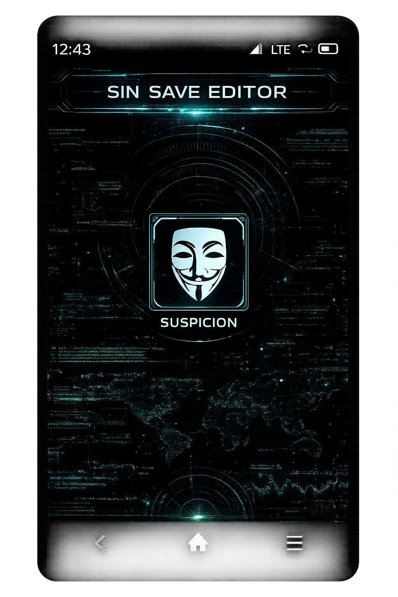

SIN THEME CONCEPT

Value-only INPUT from
Suspicion categoryPhone PNG centered in the editor area. One input is attached directly under the SUSPICION label, showing only the Suspicion value.
Suspicion category